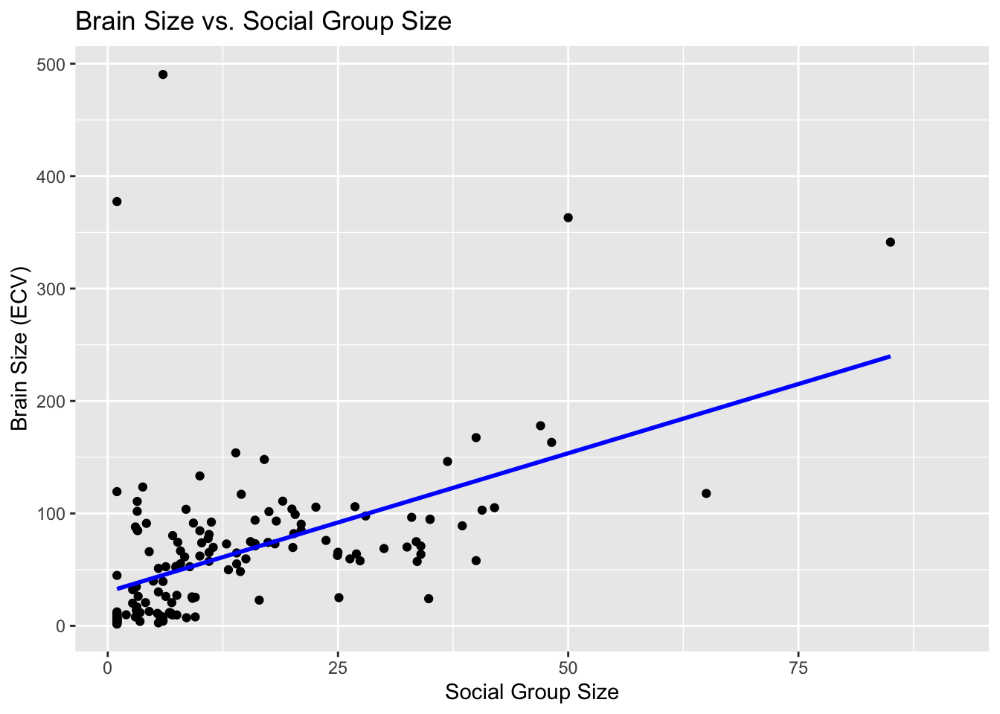
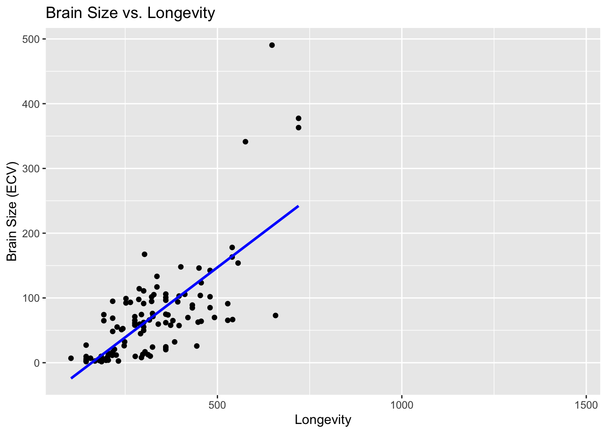
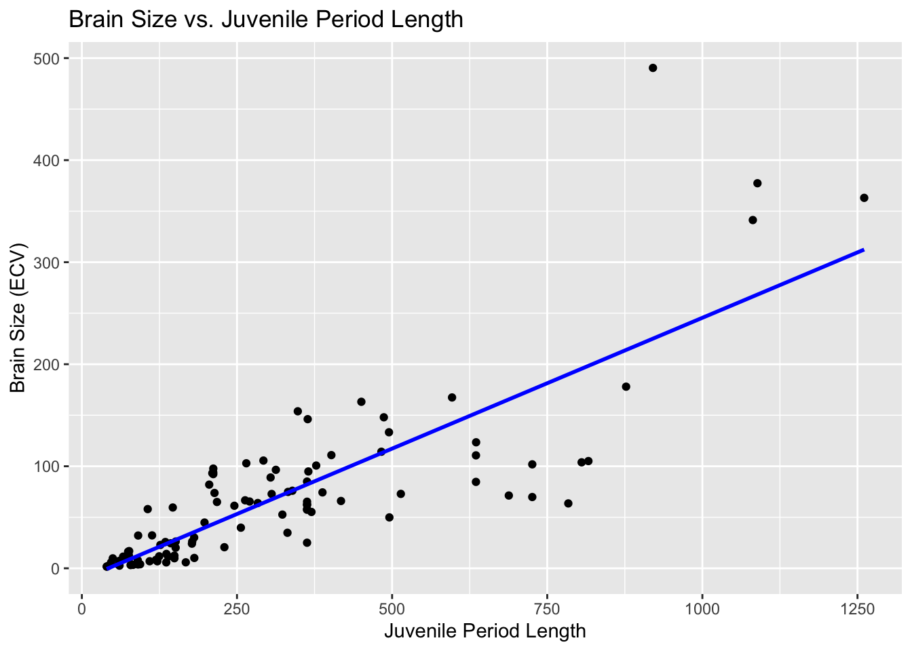
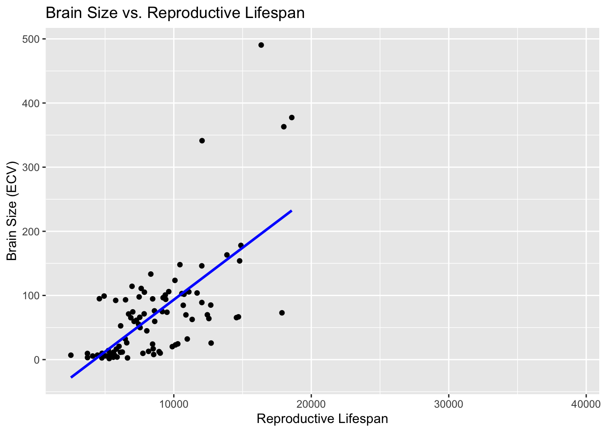

Coding challenge: Practice Simple Linear Regression
Step 1: Do a quick exploratory data analysis where you generate the five-number summary (median, minimum and maximum and 1st and 3rd quartile values), plus mean and standard deviation, for each quantitative variable.
library(tidyverse)
── Attaching core tidyverse packages ──────────────────────── tidyverse 2.0.0 ──
✔ dplyr 1.1.4 ✔ readr 2.1.5
✔ forcats 1.0.0 ✔ stringr 1.5.1
✔ ggplot2 3.5.0 ✔ tibble 3.2.1
✔ lubridate 1.9.3 ✔ tidyr 1.3.1
✔ purrr 1.0.2
── Conflicts ────────────────────────────────────────── tidyverse_conflicts() ──
✖ dplyr::filter() masks stats::filter()
✖ dplyr::lag() masks stats::lag()
ℹ Use the conflicted package (<http://conflicted.r-lib.org/>) to force all conflicts to become errors
Rows: 301 Columns: 13
── Column specification ────────────────────────────────────────────────────────
Delimiter: ","
chr (2): Species, Taxonomic_group
dbl (11): Social_learning, Research_effort, ECV, Group_size, Gestation, Wean...
ℹ Use `spec()` to retrieve the full column specification for this data.
ℹ Specify the column types or set `show_col_types = FALSE` to quiet this message.
Step 2: From this dataset, plot brain size (ECV) as a function of social group size (Group_size), longevity (Longevity), juvenile period length (Weaning), and reproductive lifespan (Repro_lifespan).
library(tidyverse)# Scatter plot for brain size vs. social group size ggplot(d, aes(x = Group_size, y = ECV)) +geom_point() +geom_smooth(method ="lm", se =FALSE, color ="blue", na.rm =TRUE) +labs(title ="Brain Size vs. Social Group Size",x ="Social Group Size",y ="Brain Size (ECV)")
`geom_smooth()` using formula = 'y ~ x'

# Scatter plot for brain size vs. longevity ggplot(d, aes(x = Longevity, y = ECV)) +geom_point() +geom_smooth(method ="lm", se =FALSE, color ="blue", na.rm =TRUE) +labs(title ="Brain Size vs. Longevity",x ="Longevity",y ="Brain Size (ECV)")
`geom_smooth()` using formula = 'y ~ x'

# Scatter plot for brain size vs. juvenile period length ggplot(d, aes(x = Weaning, y = ECV)) +geom_point() +geom_smooth(method ="lm", se =FALSE, color ="blue", na.rm =TRUE) +labs(title ="Brain Size vs. Juvenile Period Length",x ="Juvenile Period Length",y ="Brain Size (ECV)")
`geom_smooth()` using formula = 'y ~ x'

# Scatter plot for brain size vs. reproductive lifespan ggplot(d, aes(x = Repro_lifespan, y = ECV)) +geom_point() +geom_smooth(method ="lm", se =FALSE, color ="blue", na.rm =TRUE) +labs(title ="Brain Size vs. Reproductive Lifespan",x ="Reproductive Lifespan",y ="Brain Size (ECV)")
`geom_smooth()` using formula = 'y ~ x'

There is positive linear relationship of brain size (ECV) with social group size (Group_size), longevity (Longevity), juvenile period length (Weaning), and reproductive lifespan (Repro_lifespan).
Step 3:Derive by hand the ordinary least squares regression coefficients B1 and B0 for ECV as a function of social group size.
Rows: 301 Columns: 13
── Column specification ────────────────────────────────────────────────────────
Delimiter: ","
chr (2): Species, Taxonomic_group
dbl (11): Social_learning, Research_effort, ECV, Group_size, Gestation, Wean...
ℹ Use `spec()` to retrieve the full column specification for this data.
ℹ Specify the column types or set `show_col_types = FALSE` to quiet this message.
Call:
lm(formula = logECV ~ logGS, data = s)
Residuals:
Min 1Q Median 3Q Max
-2.3777 -0.4331 0.0553 0.4056 3.7877
Coefficients:
Estimate Std. Error t value Pr(>|t|)
(Intercept) 2.14555 0.14177 15.13 <2e-16 ***
logGS 0.70783 0.06075 11.65 <2e-16 ***
---
Signif. codes: 0 '***' 0.001 '**' 0.01 '*' 0.05 '.' 0.1 ' ' 1
Residual standard error: 0.9005 on 149 degrees of freedom
Multiple R-squared: 0.4768, Adjusted R-squared: 0.4733
F-statistic: 135.8 on 1 and 149 DF, p-value: < 2.2e-16
The both lm() function and manual calculations yield the same result.
Step 5: Repeat the analysis above for three different major radiations of primates - “catarrhines”, “platyrrhines”, and “strepsirhines”) separately. These are stored in the variable Taxonomic_group. Do your regression coefficients differ among groups? How might you determine this?
Rows: 301 Columns: 13
── Column specification ────────────────────────────────────────────────────────
Delimiter: ","
chr (2): Species, Taxonomic_group
dbl (11): Social_learning, Research_effort, ECV, Group_size, Gestation, Wean...
ℹ Use `spec()` to retrieve the full column specification for this data.
ℹ Specify the column types or set `show_col_types = FALSE` to quiet this message.
# remove missing variabless <- d %>%drop_na(ECV, Group_size) %>%mutate(logECV =log(ECV), logGS =log(Group_size))# Subset data for each taxonomic groupstrepsirhini_data <- s %>%filter(Taxonomic_group =="Strepsirhini")catarrhini_data <- s %>%filter(Taxonomic_group =="Catarrhini")platyrrhini_data <- s %>%filter(Taxonomic_group =="Platyrrhini")# Fit linear regression models for each taxonomic groupmodel_strepsirhini <-lm(logECV ~ logGS, data = strepsirhini_data)model_catarrhini <-lm(logECV ~ logGS, data = catarrhini_data)model_platyrrhini <-lm(logECV ~ logGS, data = platyrrhini_data)# Display regression summariessummary(model_strepsirhini)
Call:
lm(formula = logECV ~ logGS, data = strepsirhini_data)
Residuals:
Min 1Q Median 3Q Max
-1.89775 -0.42666 0.05441 0.47098 2.00196
Coefficients:
Estimate Std. Error t value Pr(>|t|)
(Intercept) 1.8014 0.1404 12.832 < 2e-16 ***
logGS 0.6282 0.1233 5.093 7.08e-06 ***
---
Signif. codes: 0 '***' 0.001 '**' 0.01 '*' 0.05 '.' 0.1 ' ' 1
Residual standard error: 0.7294 on 44 degrees of freedom
Multiple R-squared: 0.3709, Adjusted R-squared: 0.3566
F-statistic: 25.94 on 1 and 44 DF, p-value: 7.076e-06
summary(model_catarrhini)
Call:
lm(formula = logECV ~ logGS, data = catarrhini_data)
Residuals:
Min 1Q Median 3Q Max
-0.57941 -0.27722 -0.09538 0.12207 1.65274
Coefficients:
Estimate Std. Error t value Pr(>|t|)
(Intercept) 4.556383 0.171841 26.515 <2e-16 ***
logGS -0.007746 0.060611 -0.128 0.899
---
Signif. codes: 0 '***' 0.001 '**' 0.01 '*' 0.05 '.' 0.1 ' ' 1
Residual standard error: 0.4606 on 68 degrees of freedom
Multiple R-squared: 0.0002401, Adjusted R-squared: -0.01446
F-statistic: 0.01633 on 1 and 68 DF, p-value: 0.8987
summary(model_platyrrhini)
Call:
lm(formula = logECV ~ logGS, data = platyrrhini_data)
Residuals:
Min 1Q Median 3Q Max
-1.4893 -0.7408 0.1732 0.7434 1.1986
Coefficients:
Estimate Std. Error t value Pr(>|t|)
(Intercept) 1.4767 0.4682 3.154 0.003425 **
logGS 0.8040 0.1958 4.106 0.000249 ***
---
Signif. codes: 0 '***' 0.001 '**' 0.01 '*' 0.05 '.' 0.1 ' ' 1
Residual standard error: 0.8125 on 33 degrees of freedom
Multiple R-squared: 0.3381, Adjusted R-squared: 0.318
F-statistic: 16.86 on 1 and 33 DF, p-value: 0.000249
# Perform ANOVA to test if regression coefficients differ among groupsanova_result <-aov(logECV ~ Taxonomic_group * logGS, data = s)summary(anova_result)
Thedifference of regression coefficient among three taxonomic groups has been determined using ANOVA. The ANOVA analysis revealed statistically significant variations in regression coefficients among the three taxonomic groups, as indicated by a (F(1,33) = 16.86 , p =0.0002).
Step 6: For your first regression of ECV on social group size, calculate the standard error for the slope coefficient, the 95% CI, and the p value associated with this coefficient by hand. Also extract this same information from the results of running the lm() function.
Rows: 301 Columns: 13
── Column specification ────────────────────────────────────────────────────────
Delimiter: ","
chr (2): Species, Taxonomic_group
dbl (11): Social_learning, Research_effort, ECV, Group_size, Gestation, Wean...
ℹ Use `spec()` to retrieve the full column specification for this data.
ℹ Specify the column types or set `show_col_types = FALSE` to quiet this message.
cat("P-value for Coefficient (B1):", p_value_by_hand, "\n")
P-value for Coefficient (B1): 1.035862e-22
#2 Extract coefficient standard error, 95% CI, and p-value from lm() results# Fit linear regression modelmodel <-lm(logECV ~ logGS, data = s)# Calculate SE, 95%CI and p-value using lm()se_coef <-summary(model)$coef[2, "Std. Error"]ci <-confint(model)[2, ]p_value <-summary(model)$coef[2, "Pr(>|t|)"]# Display lm() resultscat("Results from lm() function:\n")
Results from lm() function:
cat("Standard Error of Coefficient (B1):", se_coef, "\n")
cat("P-value for Coefficient (B1):", p_value, "\n")
P-value for Coefficient (B1): 1.035862e-22
The manually calculated values for standard error, 95% confidence interval, and p-value using the formula match with the values obtained using the lm() function. This consistency indicates that both methods are producing equivalent results for the slope coefficient.
Step 7: Use a permutation approach with 1000 permutations to generate a null sampling distribution for the slope coefficient. What is it that you need to permute? What is the p value associated with your original slope coefficient? You can use either the percentile method (i.e., using quantiles from the actual permutation-based null sampling distribution) or a theory-based method (i.e., using the standard deviation of the permutation-based null sampling distribution as the estimate of the standard error, along with a normal or t distribution), or both, to calculate this p value.
# Set the number of permutationsn <-1000# Store the original slope coefficientb1 =0.71original_b1 <- b1# Initialize an empty vector to store permuted slope coefficientspermuted_b1 <-numeric(n)# Perform permutations and calculate slope coefficientsset.seed(123) # Set seed for reproducibilityfor (i in1:n) {# Permute the response variable permuted_response <-sample(s$logECV)# Fit a linear model with permuted data permuted_model <-lm(permuted_response ~ s$logGS)# Store the permuted slope coefficient permuted_b1[i] <-coef(permuted_model)[2]}# Calculate the p-value using the percentile methodp_value_percentile <-sum(abs(permuted_b1) >=abs(original_b1)) / ncat("P-value (Percentile Method):", p_value_percentile, "\n")
P-value (Percentile Method): 0
In a permutation approach, the idea is to randomly shuffle or permute the values of the response variable (in this case, logECV) while keeping the predictor variable (in this case, logGS) unchanged. This process helps generate a null sampling distribution under the assumption that there is no true relationship between the response and predictor variables.In the steps above, we used the percentilemethod which involves comparing the observed statistic (in this case, the absolute value of the original slope coefficient) with the distribution of values obtained from permutations. The proportion of permuted values as extreme or more extreme than the observed value provides the p-value. We obtain the p-value of 0.00 which suggests a significant association between the variables (ECV and group_size).
Step 8: Use bootstrapping to generate a 95% CI for your estimate of the slope coefficient using both the percentile method and the theory-based method (i.e., using on the standard deviation of the bootstrapped sampling distribution as an estimate of the standard error). Do these CIs suggest that your slope coefficient is different from zero?
Rows: 301 Columns: 13
── Column specification ────────────────────────────────────────────────────────
Delimiter: ","
chr (2): Species, Taxonomic_group
dbl (11): Social_learning, Research_effort, ECV, Group_size, Gestation, Wean...
ℹ Use `spec()` to retrieve the full column specification for this data.
ℹ Specify the column types or set `show_col_types = FALSE` to quiet this message.
# Fit linear regression modelmodel <-lm(logECV ~ logGS, data = s)n <-1000# Initialize an empty vector to store bootstrapped slope coefficientsbootstrapped_b1 <-numeric(n)# Perform bootstrapping and calculate slope coefficientsset.seed(123) # Set seed for reproducibilityfor (i in1:n) {# Generate a bootstrap sample bootstrap_sample <- s[sample(nrow(s), replace =TRUE), ]# Fit a linear model with the bootstrap sample bootstrap_model <-lm(logECV ~ logGS, data = bootstrap_sample)# Store the bootstrapped slope coefficient bootstrapped_b1[i] <-coef(bootstrap_model)[2]}# Calculate 95% CI using the percentile methodci_percentile <-quantile(bootstrapped_b1, c(0.025, 0.975))# Calculate 95% CI using the theory-based methodse_bootstrapped <-sd(bootstrapped_b1)ci_theory <-c(mean(bootstrapped_b1) -1.96* se_bootstrapped, mean(bootstrapped_b1) +1.96* se_bootstrapped)cat("95% CI (Percentile Method):", ci_percentile, "\n")
95% CI (Percentile Method): 0.5770865 0.8253781
cat("95% CI (Theory-Based Method):", ci_theory, "\n")
95% CI (Theory-Based Method): 0.5823355 0.8288691
The 95% CI using Percentile Method are (0.5770865, 0.8253781), and the 95% CI (Theory-Based Method) are (0.5823355, 0.8288691). Since the confidence intervals using both percentile method and theory based method do not include zero, it suggests that the slope coefficient is significantly different from zero. This means that we have evidence to reject the null hypothesis that the true value of the slope coefficient is zero.